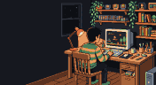

Meadowlight
A farming game about light. Crops only grow where the sun reaches, so you cut terraces into a hillside and learn how the shadows fall through the year.
Winter build playable · case study on request
Independent game developer and pixel artist in Quezon City. Small games in Godot and the screens around them, with hand-made art and a stubborn amount of measuring.
Four projects, 2022 — 2026
A farming game about light. Crops only grow where the sun reaches, so you cut terraces into a hillside and learn how the shadows fall through the year.
Winter build playable · case study on request

A 48-hour jam build about a drone that answers a signal from a sunken tower. One lamp, one battery, thirty minutes of air.
Jam build · case study on request
A menu and HUD kit for Godot games. Thirty-two components on a 4px grid, so a settings screen stops being the last thing anyone designs.
MIT · 32 components · case study on request

A devlog about building small things slowly: post-mortems, tile maps, and the parts of game feel that never fit in a post.
42 posts · case study on request
Nine years of shipping small things, mostly alone. The stack stays narrow so the hours go into the game.
Currently learning: shaders in GLSL, and how to stop rewriting the save system
I'm Jusnie. I started drawing pixel art on a borrowed copy of Aseprite in 2017, and building the systems underneath it shortly after, because the art needed something to move in.
These days that means one game at a time, made in the open, with the tools written down. I work from Quezon City, usually from 9pm, usually with the lamp on.

A game, a menu system, or a site like this one. I answer within two days, and I'll say no quickly if it isn't a fit.